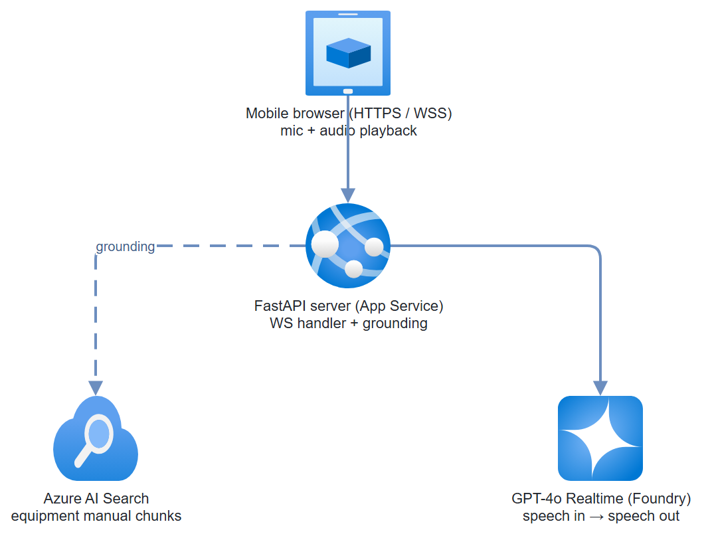

Build it yourself. This project is part of the AI Projects for Cloud Solution Architects portfolio. Full source, code, and the latest updates live in the csa-ai-projects repo on GitHub.
A field technician speaks a question; the assistant searches equipment manuals and speaks an answer back — all in under two seconds. This guide builds the WebSocket backend and the mobile web frontend.
What You're Building
A FastAPI WebSocket server that bridges browser microphone audio to the GPT-4o Realtime API via Foundry. Azure AI Search provides manual retrieval grounding. The mobile HTML/JS frontend records voice, streams audio to the backend, and plays the response through the device speaker. The whole stack runs on Azure App Service.
Prerequisites
- Microsoft Foundry project with GPT-4o Realtime deployed (check: Models → gpt-4o-realtime-preview)
- Azure AI Search index with equipment manual chunks (PDFs pre-processed and indexed)
- Azure App Service (B2 or higher — WebSocket needs it)
- Python 3.11+
fastapi,uvicorn[standard],websockets,azure-search-documents,azure-identity
pip install fastapi "uvicorn[standard]" websockets \
azure-search-documents azure-identity python-dotenv
Architecture

Step-by-Step Build
Step 1 — Index equipment manuals in Azure AI Search
SEARCH_NAME="field-assistant-search"
az search service create \
--name $SEARCH_NAME \
--resource-group $RG \
--sku Basic \
--location eastus2
# Create index
az search index create \
--service-name $SEARCH_NAME \
--resource-group $RG \
--name equipment-manuals \
--fields '[
{"name":"id","type":"Edm.String","key":true},
{"name":"content","type":"Edm.String","searchable":true},
{"name":"source","type":"Edm.String","filterable":true},
{"name":"page","type":"Edm.Int32"},
{"name":"content_vector","type":"Collection(Edm.Single)","searchable":true,
"dimensions":1536,"vectorSearchProfile":"hnsw-profile"}
]'
For bulk PDF ingestion, use the Foundry portal's Data Ingestion wizard or the azure-ai-projects data pipeline:
# Quick manual indexing for testing
from azure.search.documents import SearchClient
from azure.core.credentials import AzureKeyCredential
import json
search_client = SearchClient(
endpoint=os.environ["SEARCH_ENDPOINT"],
index_name="equipment-manuals",
credential=AzureKeyCredential(os.environ["SEARCH_KEY"])
)
# Upload sample manual chunks
sample_docs = [
{
"id": "manual-001-p1",
"content": "To reset the pressure valve on Model X500: 1. Turn off main power. "
"2. Wait 30 seconds for pressure to equalize. "
"3. Turn valve counterclockwise 3 full rotations. "
"4. Restore power and check pressure gauge — should read 45-50 PSI.",
"source": "X500-maintenance-manual.pdf",
"page": 12
},
{
"id": "manual-001-p2",
"content": "Error code E-47 on X500 indicates pump cavitation. "
"Check inlet filter (should be <15% blocked). "
"If filter is clear, inspect impeller for wear.",
"source": "X500-maintenance-manual.pdf",
"page": 34
}
]
search_client.upload_documents(sample_docs)
Step 2 — Search helper
# search.py
import os
from azure.search.documents import SearchClient
from azure.core.credentials import AzureKeyCredential
_search_client = None
def get_search_client() -> SearchClient:
global _search_client
if not _search_client:
_search_client = SearchClient(
endpoint=os.environ["SEARCH_ENDPOINT"],
index_name=os.environ.get("SEARCH_INDEX", "equipment-manuals"),
credential=AzureKeyCredential(os.environ["SEARCH_KEY"])
)
return _search_client
def search_manuals(query: str, top: int = 3) -> str:
"""Full-text search over equipment manuals. Returns context string."""
results = get_search_client().search(search_text=query, top=top)
chunks = []
for r in results:
chunks.append(
f"[Source: {r.get('source','unknown')}, page {r.get('page','?')}]\n"
f"{r.get('content','')}"
)
return "\n\n---\n\n".join(chunks) if chunks else "No relevant manual content found."
Step 3 — FastAPI WebSocket server
# server.py
import os
import json
import asyncio
import websockets
import logging
from fastapi import FastAPI, WebSocket, WebSocketDisconnect
from fastapi.staticfiles import StaticFiles
from dotenv import load_dotenv
from azure.identity import DefaultAzureCredential
from search import search_manuals
load_dotenv()
logger = logging.getLogger("field-assistant")
app = FastAPI()
# The Realtime API is reached over a raw WebSocket (below), not the
# azure-ai-projects client — so we only need the endpoint and a token here.
PROJECT_ENDPOINT = os.environ["AZURE_OPENAI_ENDPOINT"]
def get_realtime_url() -> str:
"""Build the Realtime API WebSocket URL for Foundry."""
# wss:// scheme on the Foundry/Azure OpenAI endpoint
base = PROJECT_ENDPOINT.rstrip("/").replace("https://", "wss://", 1)
return f"{base}/openai/realtime?api-version=2024-12-01-preview&deployment=gpt-4o-realtime-preview"
def get_auth_header() -> dict:
"""Get Bearer token for Foundry."""
credential = DefaultAzureCredential()
token = credential.get_token("https://cognitiveservices.azure.com/.default")
return {"Authorization": f"Bearer {token.token}"}
SYSTEM_PROMPT = """You are a voice assistant for field technicians working with industrial equipment.
You have access to equipment manuals. When a technician asks a question:
1. Give a direct, actionable answer in plain spoken language (no markdown)
2. Keep responses under 3 sentences — technicians need quick answers
3. If you're unsure, say so clearly and suggest contacting the supervisor
4. Speak numbers clearly: say "four-five PSI" not "45PSI"
"""
@app.websocket("/ws/voice")
async def voice_ws(client_ws: WebSocket):
"""Bridge browser audio to GPT-4o Realtime."""
await client_ws.accept()
logger.info("Client connected")
realtime_url = get_realtime_url()
headers = get_auth_header()
try:
async with websockets.connect(
realtime_url,
additional_headers=headers,
ping_interval=20
) as rt_ws:
# Initialize Realtime session
await rt_ws.send(json.dumps({
"type": "session.update",
"session": {
"modalities": ["text", "audio"],
"instructions": SYSTEM_PROMPT,
"voice": "alloy",
"input_audio_format": "pcm16",
"output_audio_format": "pcm16",
"input_audio_transcription": {"model": "whisper-1"},
"turn_detection": {
"type": "server_vad",
"threshold": 0.5,
"silence_duration_ms": 800
}
}
}))
async def browser_to_realtime():
"""Forward browser audio to Realtime API."""
async for message in client_ws.iter_bytes():
# Browser sends raw PCM16 audio chunks
import base64
audio_b64 = base64.b64encode(message).decode()
await rt_ws.send(json.dumps({
"type": "input_audio_buffer.append",
"audio": audio_b64
}))
async def realtime_to_browser():
"""Forward Realtime API events to browser."""
async for raw in rt_ws:
event = json.loads(raw)
event_type = event.get("type", "")
# Forward audio deltas directly to browser
if event_type == "response.audio.delta":
await client_ws.send_json(event)
# Handle transcript for grounding
elif event_type == "conversation.item.input_audio_transcription.completed":
transcript = event.get("transcript", "")
if transcript:
logger.info(f"Technician said: {transcript}")
context = search_manuals(transcript)
# Inject context as a system message
await rt_ws.send(json.dumps({
"type": "conversation.item.create",
"item": {
"type": "message",
"role": "system",
"content": [{
"type": "input_text",
"text": f"Relevant manual context:\n\n{context}"
}]
}
}))
# Forward status events for UI feedback
elif event_type in (
"response.done",
"input_audio_buffer.speech_started",
"input_audio_buffer.speech_stopped"
):
await client_ws.send_json(event)
# Run both directions concurrently
await asyncio.gather(
browser_to_realtime(),
realtime_to_browser()
)
except WebSocketDisconnect:
logger.info("Client disconnected")
except Exception as e:
logger.error(f"Session error: {e}")
await client_ws.close()
@app.get("/health")
def health():
return {"status": "ok"}
app.mount("/", StaticFiles(directory="static", html=True), name="static")
Step 4 — Mobile voice UI
<!-- static/index.html -->
<!DOCTYPE html>
<html lang="en">
<head>
<meta charset="UTF-8">
<meta name="viewport" content="width=device-width, initial-scale=1.0, user-scalable=no">
<title>Field Assistant</title>
<style>
* { box-sizing: border-box; margin: 0; padding: 0; }
body { font-family: "Segoe UI", sans-serif; background: #1a1a2e;
color: white; display: flex; flex-direction: column;
align-items: center; justify-content: center; min-height: 100vh; }
h1 { font-size: 1.5rem; margin-bottom: 8px; }
p.subtitle { color: #8888aa; font-size: 0.9rem; margin-bottom: 40px; }
#mic-btn { width: 100px; height: 100px; border-radius: 50%;
background: #0078d4; border: none; cursor: pointer;
font-size: 2.5rem; transition: all 0.2s; box-shadow: 0 4px 20px rgba(0,120,212,0.4); }
#mic-btn.listening { background: #d40000; animation: pulse 1s infinite; }
@keyframes pulse { 0%,100% { box-shadow: 0 0 0 0 rgba(212,0,0,0.4); }
50% { box-shadow: 0 0 0 20px rgba(212,0,0,0); } }
#status { margin-top: 20px; font-size: 0.9rem; color: #8888aa; min-height: 24px; }
#transcript { margin-top: 30px; max-width: 340px; text-align: center;
color: #cccccc; font-size: 0.9rem; line-height: 1.5; min-height: 60px; }
</style>
</head>
<body>
<h1>Field Assistant</h1>
<p class="subtitle">Press and hold to ask a question</p>
<button id="mic-btn">🎤</button>
<div id="status">Ready</div>
<div id="transcript"></div>
<script>
const btn = document.getElementById('mic-btn');
const status = document.getElementById('status');
const transcript = document.getElementById('transcript');
let ws, audioCtx, mediaStream, processor, source;
let isRecording = false;
const SAMPLE_RATE = 24000;
function connectWS() {
const proto = location.protocol === 'https:' ? 'wss:' : 'ws:';
ws = new WebSocket(`${proto}//${location.host}/ws/voice`);
ws.onopen = () => status.textContent = 'Connected';
ws.onclose = () => { status.textContent = 'Disconnected'; setTimeout(connectWS, 3000); };
ws.onerror = () => status.textContent = 'Connection error';
ws.onmessage = async (e) => {
const event = JSON.parse(e.data);
if (event.type === 'response.audio.delta') {
playAudioDelta(event.delta);
} else if (event.type === 'input_audio_buffer.speech_started') {
status.textContent = 'Listening...';
} else if (event.type === 'response.done') {
status.textContent = 'Done';
btn.classList.remove('listening');
}
};
}
async function startRecording() {
if (!navigator.mediaDevices) {
alert('Microphone not available. Please use HTTPS.');
return;
}
mediaStream = await navigator.mediaDevices.getUserMedia({ audio: true });
audioCtx = new AudioContext({ sampleRate: SAMPLE_RATE });
source = audioCtx.createMediaStreamSource(mediaStream);
processor = audioCtx.createScriptProcessor(4096, 1, 1);
processor.onaudioprocess = (e) => {
if (!isRecording || ws.readyState !== WebSocket.OPEN) return;
const float32 = e.inputBuffer.getChannelData(0);
// Convert to PCM16
const int16 = new Int16Array(float32.length);
for (let i = 0; i < float32.length; i++) {
int16[i] = Math.max(-32768, Math.min(32767, float32[i] * 32768));
}
ws.send(int16.buffer);
};
source.connect(processor);
processor.connect(audioCtx.destination);
isRecording = true;
status.textContent = 'Listening...';
btn.classList.add('listening');
}
function stopRecording() {
isRecording = false;
if (processor) processor.disconnect();
if (source) source.disconnect();
if (mediaStream) mediaStream.getTracks().forEach(t => t.stop());
status.textContent = 'Processing...';
btn.classList.remove('listening');
}
// Audio playback queue
let playbackQueue = [];
let isPlaying = false;
function playAudioDelta(base64Delta) {
const bytes = Uint8Array.from(atob(base64Delta), c => c.charCodeAt(0));
const int16 = new Int16Array(bytes.buffer);
const float32 = new Float32Array(int16.length);
for (let i = 0; i < int16.length; i++) float32[i] = int16[i] / 32768;
playbackQueue.push(float32);
if (!isPlaying) drainQueue();
}
function drainQueue() {
if (!playbackQueue.length) { isPlaying = false; return; }
isPlaying = true;
const chunk = playbackQueue.shift();
const buf = audioCtx.createBuffer(1, chunk.length, SAMPLE_RATE);
buf.getChannelData(0).set(chunk);
const src = audioCtx.createBufferSource();
src.buffer = buf;
src.connect(audioCtx.destination);
src.onended = drainQueue;
src.start();
}
btn.addEventListener('pointerdown', e => { e.preventDefault(); startRecording(); });
btn.addEventListener('pointerup', stopRecording);
btn.addEventListener('pointerleave', stopRecording);
connectWS();
</script>
</body>
</html>
Step 5 — Deploy to App Service
# Enable WebSocket on App Service
az webapp config set \
--name field-assistant-app \
--resource-group $RG \
--web-sockets-enabled true
# Set startup command
az webapp config set \
--name field-assistant-app \
--resource-group $RG \
--startup-file "uvicorn server:app --host 0.0.0.0 --port 8000"
Test It
Open https://<your-app>.azurewebsites.net on your phone. Press and hold the microphone button and ask:
- "How do I reset the pressure valve on the X500?"
- "What does error code E-47 mean?"
Expect a spoken response within 1-2 seconds of releasing the button.
Latency check: GPT-4o Realtime targets <500ms first audio token. If you see >2 second latency, ensure your App Service is in the same region as your Foundry deployment.
Common Mistakes
- Audio not playing on iOS. iOS requires a user gesture to create an
AudioContext. Thepointerdownhandler satisfies this — don't initializeAudioContexton page load. - PCM format mismatch. GPT-4o Realtime expects
pcm16at 24kHz. If yourAudioContextruns at 44.1kHz, resample before sending. - WebSocket disconnects after 5 minutes. App Service has a 3-minute idle timeout. Set
ping_interval=20inwebsockets.connect()to keep the connection alive.
Extend It
- Offline fallback: Cache the last 50 search results in the browser's IndexedDB so technicians can still get answers in dead zones.
- Photo attachment: Add a camera button. Send the photo to GPT-5.4 vision mode alongside the spoken question for visual troubleshooting ("What's wrong with this connection?").
- Multi-language: Detect language from Whisper transcription output, set
voiceaccordingly (Foundry supports multiple voice characters), and return answers in the same language.